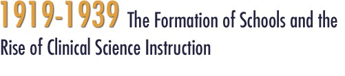
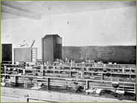

Throughout the 1920s, the faculty and trustees of the California college of pharmacy participated in a general upgrading of the curriculum, sending annual delegates to the national conferences of the American Association of Colleges of Pharmacy. Conscious of its status as one of the few university-affiliated schools in the nation, the college of pharmacy stressed its legacy and distanced itself from the proprietary schools where large enrollments brought profits to faculty. Its Bulletin stated “from the first, the college endeavored to keep abreast of the best pharmaceutical schools in this county. It has not sought to enroll the greatest number of students, but to do the greatest amount of good. It has created a sentiment among pharmacists in favor of higher education.” Nevertheless, tension existed between the cost of raising academic standards and concern for financial viability of the school, since it had been affiliated with the University of California since 1872, but financial control remained in the hands of the Trustees, not the UC Regents. In 1914 the College of Pharmacy had established a four year program, maintaining it along with two and three year programs. Throughout the 1920s, as professional standards were being constructed at the national level, the college offered a series of two and three-year courses leading to degrees entitled PharmC, Pharm G and Pharm B, with a progressive tightening of admissions requirements involving more years of high school work and preparatory courses in Latin.
The 1920s marked a troubled decade in the history of pharmaceutical education as career opportunities diminished with the industrialization of pharmaceuticals, and the drugstore became a more broad commercial enterprise. This growing rift in professional life between trade concerns and intellectual challenge was reflected in lecture titles given in 1926 at the college for “publicity week”. Mr. E. B Kipfer from the Eli Lilly company lectured on “The Discovery And Uses Of Insulin,” and C. L. Stevens of the Western Company of Chicago talked on “The Development And Possibilities Of The Tooth Brush Industry.” Nevertheless, the decade was marked by an increasingly sophisticated curriculum and a lively student presence at the College of Pharmacy.
>> The Langley Porter Reforms
UC Pharmacy
The 1920s was a decade of ferment for Pharmacy education. In a speech in 1915, Abraham Flexner had declared that pharmacy was not a profession, stating that while the physician “thinks, decides, and orders; the pharmacist obeys—obeys of course with discretion, intelligence, and skill-yet in the end obeys and does not originate.” The collective profession was stung by this public assertion as well as pharmacy’s disappointing experience in the First World War —pharmacists were not considered officers and the army trained its own enlisted men to dispense medications. In the postwar period, the need for professional recognition prompted leaders to develop a study of pharmaceutical education similar to the Flexner and Gies Reports. They looked to the Carnegie Foundation for assistance, and eventually commissioned a study of pharmaceutical curriculum with support from the Commonwealth Fund. This work, published in 1927, recommended a four year B.S. curriculum and its author argued that pharmacy was a profession because the materials used were “dangerous and require ultimate acquaintance with the fundamental sciences upon which the art depends.” Throughout the 1920s, the faculty and trustees of the California college of pharmacy participated in a general upgrading of the curriculum, sending annual delegates to the national conferences of the American Association of Colleges of Pharmacy. Conscious of its status as one of the few university-affiliated schools in the nation, the college of pharmacy stressed its legacy and distanced itself from the proprietary schools where large enrollments brought profits to faculty. Its Bulletin stated “from the first, the college endeavored to keep abreast of the best pharmaceutical schools in this county. It has not sought to enroll the greatest number of students, but to do the greatest amount of good. It has created a sentiment among pharmacists in favor of higher education.” Nevertheless, tension existed between the cost of raising academic standards and concern for financial viability of the school, since it had been affiliated with the University of California since 1872, but financial control remained in the hands of the Trustees, not the UC Regents. In 1914 the College of Pharmacy had established a four year program, maintaining it along with two and three year programs. Throughout the 1920s, as professional standards were being constructed at the national level, the college offered a series of two and three-year courses leading to degrees entitled PharmC, Pharm G and Pharm B, with a progressive tightening of admissions requirements involving more years of high school work and preparatory courses in Latin.

In 1927, with strong support from the administration of the California College of Pharmacy, the legislature passed a new law requiring three years of formal instruction for candidates presenting themselves to the state board of pharmacy for licensing examination.
National recommendations for a four-year course were heeded by the California Pharmacy trustees, but they insisted on also retaining their popular three year course which had helped finance the school. Ironically the college dean, Ph.D. Chemist H. C. Biddle, was one of five members of the American Association of Colleges of Pharmacy committee appointed to consider a national educational policy promoting the new four-year curriculum. It was under his direction that the California College of Pharmacy briefly resigned its membership in the organization rather than lose accreditation. The problem would be solved at the university level in the next decade as President Sproul and the trustees finally agreed on full integration with the University and the Board of Regents took on financial responsibility for the increasing instructional needs of the College of Pharmacy.
Upgraded lab equipment for Pharmacy
The 1920s marked a troubled decade in the history of pharmaceutical education as career opportunities diminished with the industrialization of pharmaceuticals, and the drugstore became a more broad commercial enterprise. This growing rift in professional life between trade concerns and intellectual challenge was reflected in lecture titles given in 1926 at the college for “publicity week”. Mr. E. B Kipfer from the Eli Lilly company lectured on “The Discovery And Uses Of Insulin,” and C. L. Stevens of the Western Company of Chicago talked on “The Development And Possibilities Of The Tooth Brush Industry.” Nevertheless, the decade was marked by an increasingly sophisticated curriculum and a lively student presence at the College of Pharmacy.
>> The Langley Porter Reforms
{% include footer.html %}